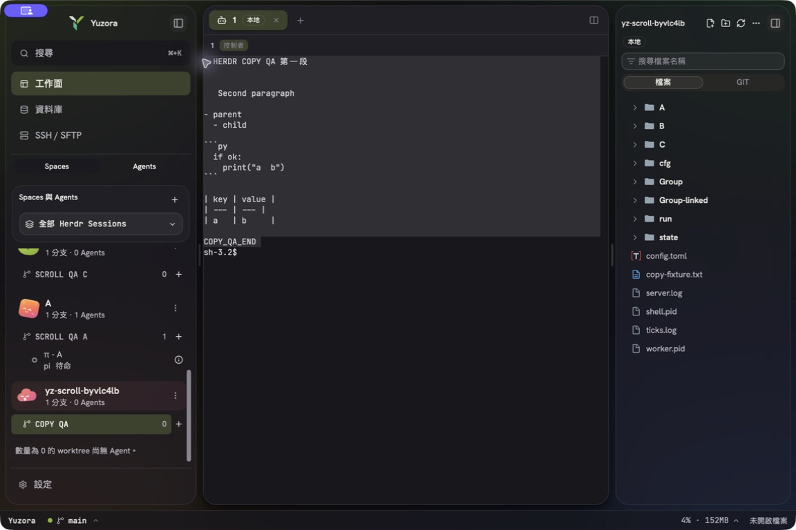
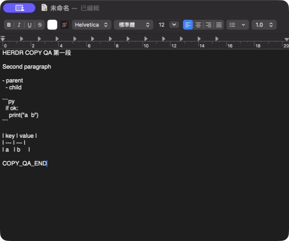

2026-09-14 · 候選分支 release/v0.0.14 · 基準 4e6dc6a。僅修改從 HERDR 選取文字複製到剪貼簿；不改編輯器複製、檔案管理器、貼上內容或 HERDR Session 原始資料。
terminalCopyFormat.ts 使用既有 markdown-it 的 token ranges 辨識受保護區塊；一般段落靠左、去除行尾 padding 與額外空白段落，保留 fenced／indented code、inline code、清單／續行、引用、表格、hard break 與可辨識的文字圖。輸出不額外加結尾換行；無法辨識的縮排優先保留。terminalSelectionSnapshot.ts：第一次原生驗收顯示 HERDR raster frame 將右側填滿 literal spaces，單純保護 code 會把 padding 也保留下來（452 字元，預期 153）。現在以 xterm 公開 selection range 與 buffer 驗證一般選取，只清除延伸到畫面右緣的三格以上空白；保留軟換行銜接空格、partial selection 與 column mode 語意。原生複測完全符合 153 字元預期。terminalCopyQueue.ts / terminalCopyWorker.ts：全 App 共用序列 pipeline 與最新一筆 pending。64 Ki UTF-16 code units 以下同步排版，更大內容送到按需建立的單一 Worker；相同排版函式、不截斷。Worker 30 秒 timeout、錯誤／取消後終止並可重建，最後一個 controller dispose 時釋放 Worker。terminalClipboard.ts：keyboard／native copy／auto-copy 共用快照與 writer；取消重複事件與 pending auto-copy，不同 pane 的舊結果不能蓋掉新結果。Tauri plugin 寫入失敗才 fallback，過期工作不 fallback；失敗由 HerdrTerminalPage 顯示雙語訊息，不記錄選取文字。視覺終端資料無法復原已被渲染掉的 Markdown 語法，也無法證明右緣大量空格原本是否屬於來源字串。排除右緣 padding 的規則已固定回歸；不宣稱可逐位元還原原始程式檔。四格／tab 縮排會依 Markdown 視為 code 並保留。
| 項目 | 結果 | 證據／限制 |
|---|---|---|
| Typecheck／production build | PASS | 兩份 tsconfig 與 Vite build；產物含 terminalCopy.worker 獨立 chunk。 |
| Frontend tests | PASS | 229 files / 2777 tests；新增 formatter、queue、Worker、實機 padding 回歸。測試涵蓋 200 次 burst、最新結果、dispose、fallback、Worker abort／timeout／error／malformed response、LF／CRLF、重複事件與原有 paste 行為。 |
| ESLint | PASS | 完整檢查 0 errors / 52 既有 warnings。修改檔另檢查。 |
| macOS packaged App 複製與外部貼上 | PASS | macOS 26.6.2 / Apple Silicon / HERDR 0.9.0 / App 0.0.14（隔離 identifier dev.yuuzu.yuzora.acceptance）。專用 scroll-acceptance Session w6:p1：實際拖曳後 ⌘C、Edit → Copy、auto-copy 皆與預期 153 字元完全相同且無 CR；TextEdit 新文件實際 ⌘V 顯示段落、中文、code、list、table 正確。既有 Pi 與其他 Session 工作未終止。 |
| Windows 原生／WSL2 Ubuntu 26.04 packaged UI 與外部貼上 | NOT RUN | 使用者通知 Windows 已關機，明確指定由使用者自行測試；已停止連線嘗試。提供下方案例。自動化平台 UA 測試不等同 Windows 原生 PASS。 |
| 大型文字 Worker／主執行緒反應 | PASS（瀏覽器 harness） | Chrome 153 前景頁 production Worker，3 種大小各 50 次；字串與同步 formatter 全等，未觀察到 longtask ≥50ms。這不是原生 HERDR 選取 E2E 或 clipboard IPC latency。 |
| 原生 WebView 大型選取持續捲動、clipboard IPC p50/p95、長時間資源曲線 | NOT RUN | 原生本輪驗證有限大小選取；大型內容為 production Worker harness。沒有以工具呼叫時間冒充剪貼簿 latency，亦未宣稱全面長時間效能驗收。 |
| macOS App build／ad-hoc 簽章檢查 | PASS | aarch64-apple-darwin release App；codesign --verify --deep --strict。測試 override 停用 updater artifacts，正式 updater 設定未修改。可執行檔 SHA256：f0ceca0eac59b7c701da8eea7c8b034032dfa798019a80756721481d234fb7bf。 |
| Signed updater／installer 升級／完整跨版本驗收 | NOT RUN | 保留既有發布門檻；本增量不發布正式版、不手動建立 tag。 |
bun scripts/benchmark-herdr-copy.ts：同一 Mac、Bun 1.3.14、相同 fixture、各 50 次。舊版僅做 trimming，新版增加 Markdown 結構判斷，因此背景總耗時變長；可比較的改善是大型複製不在主執行緒同步完成。數值均為毫秒 p95。
| UTF-16 字元數 | 原始同步 trimming | 新版呼叫端派送 | 新版排版完成 |
|---|---|---|---|
| 10 Ki | 0.158 | 1.191 | 1.194 |
| 100 Ki | 0.762 | 0.114 | 7.690 |
| 1 Mi | 8.442 | 0.264 | 65.420 |
Chrome 前景 production harness：10 Ki／100 Ki／1 Mi 派送 p95 分別 2.0／0.2／0.5ms；排版完成 p95 為 2.0／22.9／208.5ms；最大 frame gap 16.5／16.4／17.2ms；每組 longtask ≥50ms 為 0。前一次背景頁量測因背景降頻不列入比較。
Bun 樣本統計 · Chrome 統計。重跑 browser harness：bunx vite build --config fixtures/e2e.vite.config.ts、bunx vite preview --config fixtures/e2e.vite.config.ts，前景開啟 /fixtures/herdr-copy-e2e.html 並按 Run。
$text = Get-Clipboard -Raw
$text.Contains("`r`n") # 多行內容應 True
$text -match "(?<!`r)`n" # 應 False，沒有單獨 LF
$text.Contains("`r`r`n") # 應 False，沒有重複 CR
三種複製入口核對 · 原生發現的 padding 問題 · 修正後剪貼簿


Git：本次修改提交及推送至 release/v0.0.14，SHA 與推送結果見 Git 紀錄及最終回覆。此報告不代表推送後的新 CI 或 Windows installers 已完成。